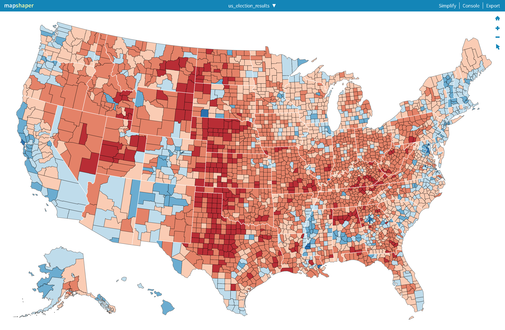
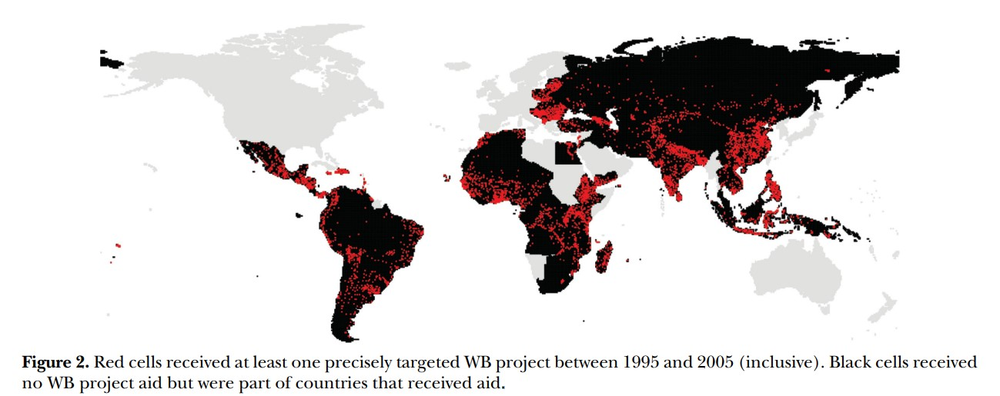
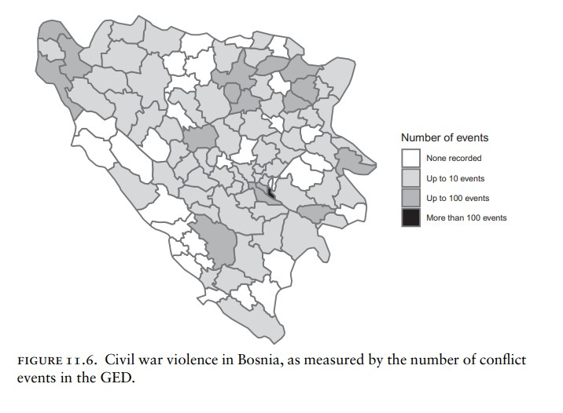
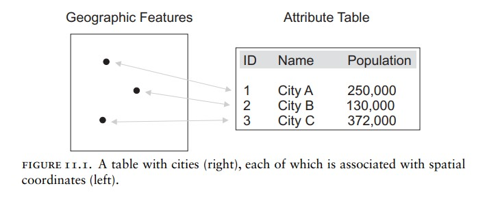

city lng lat admin_name population
1 Oslo 10.7528 59.9111 Oslo 693494
2 Bergen 5.3233 60.3925 Hordaland 257087
3 Trondheim 10.4000 63.4400 Sør-Trøndelag 183378
4 Stavanger 5.7333 58.9701 Rogaland 129300
5 Sørum 11.3472 59.9135 Akershus 113659
6 Drammen 10.1907 59.7572 Buskerud 90722What is spatial data?
In this section, you’ll learn about spatial data, i.e. data that is represented in space.
[I will place the video for this section here]
Literature
Several of the data, figures, and code examples in this part of the course are based on Nils Weidmann’s 2023 book “Data Management for Social Scientists.” I highly recommend you to consult the respective chapter on spatial data management to deepen some the understanding of the concepts in this section.
Why do we need spatial data?
Many political phenomena that we’re interested in have a spatial component. Here are some examples.
Example 1: Election geography
Where in a country does a certain political party have the most electoral support? Where is the party the weakest? Here’s a map of election results displayed by county from the 2020 US presidential elections. Such a map could help us answer these questions in the context for the US elections.

Example 2: Aid allocation
Another question could be: Where do the poorest people in a country live? And do poverty alleviation projects actually reach this part of the population? The figure below might help to answer this question. It shows (in red) the locations of World Bank aid projects. Did those projects actually reach the people who needed the help most? You’ll have to read the paper (Briggs 2018) to find out.

Example 3: Civil war intensity
A final example for a research question that involves spatial information might be: Where in a country does violent conflict occur? And which parts of a country are less affected by violence? Consider the map below, which shows the spatial distribution of violent events during the Bosnia civil war. The map shows that some areas where extremely affected (the dark areas) and some weren’t (the white ones). This is important information, if we want to, for example, study the strategy of why conflict actors target some areas but not others.

All these examples represent important political science questions, from different subfields. To answer them we need some form of spatial information for the data we collect on these phenomena. In short, we need “spatial” data.
What is spatial data?
The term “spatial data” denotes a dataset which contains a variable with some form of geographic information for the observations in that dataset. Such geographic information typically refers to where in geographic space an observation is located, but often also information about the specific shape of an observation.
Here’s an example to clarify what I mean by this. The right part of the figure below shows a regular dataset, similar to the ones you’ve previously encountered.

Each row (or observation) in this toy dataset represents a city. What makes this dataset now a “spatial” dataset is an additional variable that contains information on where in space each observation is located. This information is visualized in the left part of the figure which represents each row in the dataset as points in space.
Just to preview how this looks in R (we’re going to talk about how spatial data looks like in R in more detail below), consider the following data frame of Norwegian cities, similar to the stylized example in Figure 4.
This dataset does not contain any explicit spatial information. It does store the coordinates for each city in the lat and lng columns, but it is, so far not a spatial data frame.
Here is the same data with spatial information, stored in the geometry column.
Simple feature collection with 417 features and 5 fields
Geometry type: POINT
Dimension: XY
Bounding box: xmin: 4.7131 ymin: 58.0333 xmax: 31.1106 ymax: 71.0373
Geodetic CRS: WGS 84
# A tibble: 417 × 6
city lng lat admin_name population geometry
<chr> <dbl> <dbl> <chr> <dbl> <POINT [°]>
1 Oslo 10.8 59.9 Oslo 693494 (10.7528 59.9111)
2 Bergen 5.32 60.4 Hordaland 257087 (5.3233 60.3925)
3 Trondheim 10.4 63.4 Sør-Trøndelag 183378 (10.4 63.44)
4 Stavanger 5.73 59.0 Rogaland 129300 (5.7333 58.9701)
5 Sørum 11.3 59.9 Akershus 113659 (11.3472 59.9135)
6 Drammen 10.2 59.8 Buskerud 90722 (10.1907 59.7572)
7 Skien 9.61 59.2 Telemark 73330 (9.609 59.2096)
8 Kristiansand 8.00 58.1 Vest-Agder 64057 (7.9956 58.1467)
9 Sandnes 5.73 58.8 Rogaland 58694 (5.7333 58.85)
10 Tønsberg 10.4 59.3 Vestfold 56293 (10.4236 59.2981)
# ℹ 407 more rowsWe need the data in a specific spatial format to perform spatial operations on it. So, the first step in any spatial data analysis is always to check whether the data is in a spatial format or if we have to transform it into one. We will learn how to transform a data frame that does not have explicit spatial data in the next section.
How to check if a data frame contains spatial data
Type the name of the data frame object into the R console. If the resulting output contains a geometry column and the output starts with the line Simple feature collection with X features and Y fields (similar to the output above), then it’s a spatial dataset. See the next section for how to convert a regular data frame into a spatial data frame.
What can we do with spatial data?
For the purposes of this course, we look at two main features of spatial data:
- Spatial data gives us a new way to visualize data in addition to the techniques we learned in LINK TO DATA VIZ SESSION: maps. As illustrated by the examples above (cf. Figure 1, Figure 2, Figure 3), maps are a powerful way to communicate the spatial dimension of your data. We will cover how to create informative maps in the section on mapping.
- Match spatial information to each other. One of the most powerful features of spatial data is that they allow us to combine two pieces information that we know exist in the same geographical space. An example: we know the home address of survey respondents, so we have their coordinates (similar to the coordinates of the cities above). But we’re analytically interested in how the economic performance of the survey respondent’s municipality is correlated with their political attitudes. We can use spatial data techniques to match the respondent location to the municipalities for which we have economic performance data. This technique is called a spatial join and we will learn about in the section on spatial joins.
What types of spatial data exist?
Now that we know why we might need spatial data, what spatial data is, and what we can do with it (at least roughly), let’s look a bit closer into what types of spatial data exist. In general, we distinguish between two types of spatial data: vector and raster data.
Raster data is a type of spatial data that records for a geolocated pixel (e.g. a 1x1km grid) on the globe a certain value, e.g. the degree to which this pixel emits man-made lights at night. This type of data is often collected by satellites. We’re not going to cover raster data in this course, but R has some powerful features to handle raster data as well. See here if you want to learn more about raster data.
In this course, we’ll focus on how to handle vector data. Roughly speaking vector data refers to objects that can be represented in space by points, lines, or shapes (or “polygons”).
Here is a visualization of each data type:

We’ve already encountered examples of point data: these are data points (observations; rows in a dataset) that can be represented by a point in space. Examples include cities, survey respondents (e.g. their home address), events that happen in a clearly defined location (e.g. battle in a war). In a spatial point dataset each observation therefore refers to a distinct point in space.
Line vectors refer to objects that can be represented by, well, a line. Think of rivers, roads, railway tracks, hiking routes etc. In a spatial line dataset, each observation or row in the dataset refers to the entire line, e.g. the road or hiking trail.
Polygon vectors represent things that have a shape. Examples are countries, municipalities (or other administrative areas within a country), lakes, natural parks, but also more abstract things like rectangles (often referred to as grid cells). In a polygon dataset, each observation represents an individual shape, e.g. a country or a municipality.
When handling spatial data, we’re often interested in how these different types of vector data intersect: how many points fall within one polygon (e.g. how many battle events fall within a municipality?); how many countries (shapes) are crossed by river (line)? It’s important to know which type of vector data we’re dealing with and what precisely our analytical goal is with these data, e.g. which data types we want to match spatially. More on that in the section on spatial joins.
Know your vector data type!
If you work with spatial data, make sure that you know which of your data frames is point, line, or polygon data.
Coordinate reference systems
A final important feature of spatial data is that it references points in space on a sphere, the Earth.1 This feature raises the issue of how to get from a three-dimensional surface to a two-dimensional representation of this surface in the form of points, lines, or shapes.
The first approach to do this is to assign coordinates to each point (or points on a line/border). Here is how Weidmann (2023) describes this approach, also called geographic coordinate system.
This is what we do when using longitude and latitude coordinates: The equator has latitude 0, and locations north (south) of the equator have positive (negative) latitudes, each measured in radial coordinates. Longitude 0 is defined as going through Greenwich, and longitudes increase as we move east, again measured in radial coordinates. Thus, each point on the globe can now be uniquely identified by its longitude (x) and latitude (y) values, which is called a geographic coordinate system.
The second approach is called a projected coordinate reference system. Again, in Weidmann’s (2023) words a projection is “essentially an instruction for mapping points on the globe to corresponding ones on a map.”
The following picture illustrates both types of coordinate reference systems.

It’s too complicated to go into the specific details of different CRS, but you need to keep in mind two essential features about them.
- When you perform spatial operations, such as spatial matching (e.g. points to polygons, or intersection of lines with polygons) you need to make sure that both spatial data sources are in the same CRS. We will learn how to assign a CRS if you do not have one in the next section.
- If you like to calculate distances (e.g. the distance of each polygon to a point, such as the distance of municipalities to a country’s capital) you need to transform your spatial data frames into a projected CRS.
Footnotes
The earth is actually not precisely a sphere, but that fact is usually not important for the types of spatial data we deal with as social scientists.↩︎